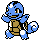

#007
Squirtle
Water
Abilities: Rain Dish, Torrent, Drizzle
Base stats BST 314
HP44
Attack48
Defense65
Speed43
Sp. Atk50
Sp. Def64
Evolution
None detected.
Level-up learnset
LevelMoveType
No moves detected.

CLONE FORM
Squirtle
Water
Abilities: Rain Dish, Torrent, Drizzle
Base stats BST 314
HP44
Attack48
Defense65
Speed43
Sp. Atk50
Sp. Def64
Evolution
dbbw EVOLVE_LEVEL, 16, WARTORTLEdbbw EVOLVE_LEVEL, 16, WARTORTLE_CLONELevel-up learnset
LevelMoveType
Lv. 1Tail WhipNormal
Lv. 1TackleNormal
Lv. 1Tail WhipNormal
Lv. 1TackleNormal
Lv. 5Water GunWater
Lv. 5Water GunWater
Lv. 8WithdrawWater
Lv. 8WithdrawWater
Lv. 11BubbleWater
Lv. 11BubbleWater
Lv. 14BiteDark
Lv. 14BiteDark
Lv. 17Rapid SpinNormal
Lv. 17Rapid SpinNormal
Lv. 20Water PulseWater
Lv. 20Water PulseWater
Lv. 23ProtectNormal
Lv. 23ProtectNormal
Lv. 27Shell SmashNormal
Lv. 27Shell SmashNormal
Lv. 32Skull BashNormal
Lv. 32Skull BashNormal
Lv. 35Aqua TailWater
Lv. 35Aqua TailWater
Lv. 38Rain DanceWater
Lv. 38Rain DanceWater
Lv. 41Hydro PumpWater
Lv. 41Hydro PumpWater
Wild locations
Not found in the parsed wild encounter tables.